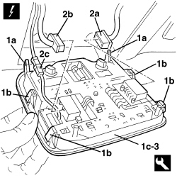
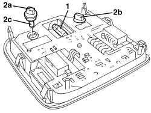
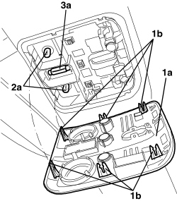
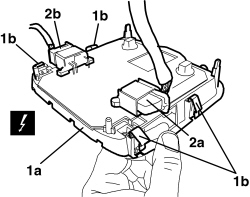

7040E40 FRONT COURTESY LIGHT - R.R.
- Path
- Procedures > 70 FITTINGS > 7040 BODY INTERIOR FITTINGS AND TRIM > 7040E INTERIOR COURTESY LIGHT SYSTEM > 7040E40 FRONT COURTESY LIGHT - R.R.
- Kind
- repair procedure (removal / refitting; the operation number is the code)
- Applies to
- all engines; all production periods
- Interactive page
- https://sloeber94.github.io/elrnDB-aBrrSpdr/en/#/946002626
Applies to: all engines; all production periods
 Removing
Removing
 Refitting
Refitting1. Using the special tool, release the rigid retainers (1a) and the flexible retainers (1b), then lower the courtesy light (1c) slightly.
Tool | Description | Function | Validity |
|---|---|---|---|
1823014000 | Knife | Retainer removal |
2. Disconnect the electrical connections (2a, 2b, 2c) for the courtesy light.
Description | Component |
|---|---|
FRONT COURTESY LIGHT |
3. Keep the courtesy light.

Applies to: all engines; all production periods
1. If necessary, remove the central bulb by releasing from the side retainers.
2. If necessary, remove side bulb holders (2a) and/or (2b) (bayonet mount), then remove side bulbs (2c) (press-fit).

Applies to: all engines; all production periods
Refitting
Removing- Check that the courtesy light is not damaged.
- If removed, fit the bulbs and bulb holders in place.
- Connect the electrical connection for the courtesy light.
- Position the courtesy light and attach the retainers.
- Check that the bulbs are working.
Applies to: engines: 2.2 JTS, 3.2 JTS; all production periods; only with equipment: Spider
Removing
Refitting1. Remove the cover (1a) releasing the inner retainers (1b).
2. If necessary, remove the side bulbs (2a) (press-fit)
3. If necessary, remove the centre bulb (3a) by releasing it from the retainers.

Applies to: engines: 2.2 JTS, 3.2 JTS; all production periods; only with equipment: Spider
1. Release the courtesy light (1a) releasing the flexible retainers (1b).
2. Disconnect the electrical connections (2a, 2b) for the courtesy light.
Description | Component |
|---|---|
FRONT COURTESY LIGHT |
3. Keep the courtesy light.

Applies to: engines: 2.2 JTS, 3.2 JTS; all production periods; only with equipment: Spider
Refitting
Removing- Check that the courtesy light is not damaged.
- Connect the electrical connection for the courtesy light.
- Position the courtesy light and attach the flexible retainers.
- If removed, fit the bulb in place.
- Position the cover and attach the inner retainers.
- Check that the bulbs are working.
Topics linked from this page (1)
Topics that link to this page (48)
- K073 SEAT BELT UNFASTENED WARNING LIGHT ON
- K157 SEAT BELT NOT FASTENED WARNING LIGHT NOT WORKING
- 5570T14 MOBILE PHONE HANDS-FREE SYSTEM MICROPHONE - R R
- 5570T61 MULTI-FUNCTION AERIAL - R.R.
- 5580C50 WINDOW BAG MODULE (ONE) LH OR RH - R.R
- 7030H35 HOOD FRONT SEAL - R.R.
- 7030H46 STRIKER (ONE), LEFT OR RIGHT FOR HANDLE ATTACHING HOOD TO WINDSCREEN STRUCTURE - R.R.
- 7030H49 MOULDING FOR HOOD FRONT SUPPORT - R.R.
- 7030H51 HOOD FRONT LOCK CLOSING SENSORS - R.R.
- 7030L10 TRANSPARENT ROOF PANEL - R.R.
- 7030L11 TRANSPARENT ROOF PANEL - R.R. FOR VERSIONS WITH SUN BLIND
- 7030L12 TRANSPARENT ROOF PANEL COVER - R.R.
- 7030L20 SUN BLIND ASSEMBLY - R.R.
- 7030L21 SUN BLIND ASSEMBLY - ALIGNMENT
- 7030L22 SLIDING SUN BLIND - R.R.
- 7030L23 SUN BLIND CROSSMEMBER - R.R.
- 7030L24 SLIDING BLIND MOVEMENT MOTOR - R.R.
- 7030L25 SLIDING BLIND DRIVE CABLES - R.R.
- 7030L26 SLIDING BLIND RETAINING CLIP (ONE), LEFT OR RIGHT - R.R.
- 7035A18 WINDSCREEN GLASS - R.R INCLUDING CLEANING HOUSING
- 7040H10 ROOF PANEL LINING - R.R.
- 7040H24 WINDSCREEN UPPER TRIM - R.R.
- E2510 COURTESY LIGHTS - WIRING DIAGRAM
- E2510 COURTESY LIGHTS - COMPONENT LOCATION
- E2535 CONTROLS LIGHTING - WIRING DIAGRAM
- E2535 CONTROLS LIGHTING - COMPONENT LOCATION
- E3061 SLIDING BLIND ON ROOF - WIRING DIAGRAM
- E3061 SLIDING BLIND ON ROOF - COMPONENT LOCATION
- E3570 INTEGRATED RADIOPHONE - WIRING DIAGRAM
- E3570 INTEGRATED RADIO PHONE - COMPONENT LOCATION
- E3570 INTEGRATED RADIOPHONE - WIRING DIAGRAM
- E3570 INTEGRATED RADIO PHONE - COMPONENT LOCATION
- E3580 MOBILE PHONE WIRING - WIRING DIAGRAM
- E3580 MOBILE PHONE WIRING - COMPONENT LOCATION
- E4090 NAVIGATOR WIRING DIAGRAM
- E4090 NAVIGATOR COMPONENT LOCATION
- E4091 CONNECT - WIRING DIAGRAM
- E4091 CONNECT - COMPONENT LOCATION
- E7015 ALARM - WIRING DIAGRAM
- E7015 ALARM - COMPONENT LOCATION
- E7015 ALARM - WIRING DIAGRAM
- E7015 ALARM - COMPONENT LOCATION
- E7030 AIR BAG - WIRING DIAGRAM
- E7030 AIR BAG - COMPONENT LOCATION
- E7030 AIR BAG - WIRING DIAGRAM
- E7030 AIR BAG - COMPONENT LOCATION
- E7030 AIR BAG - WIRING DIAGRAM
- E7030 AIR BAG - COMPONENT LOCATION